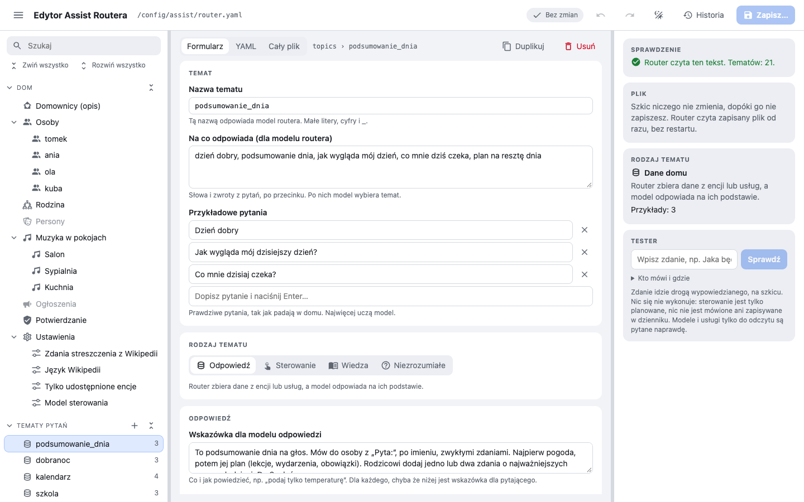
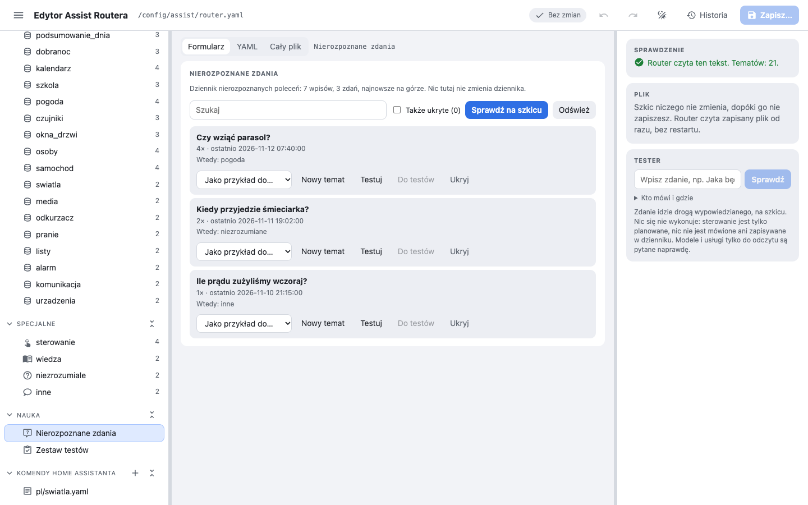
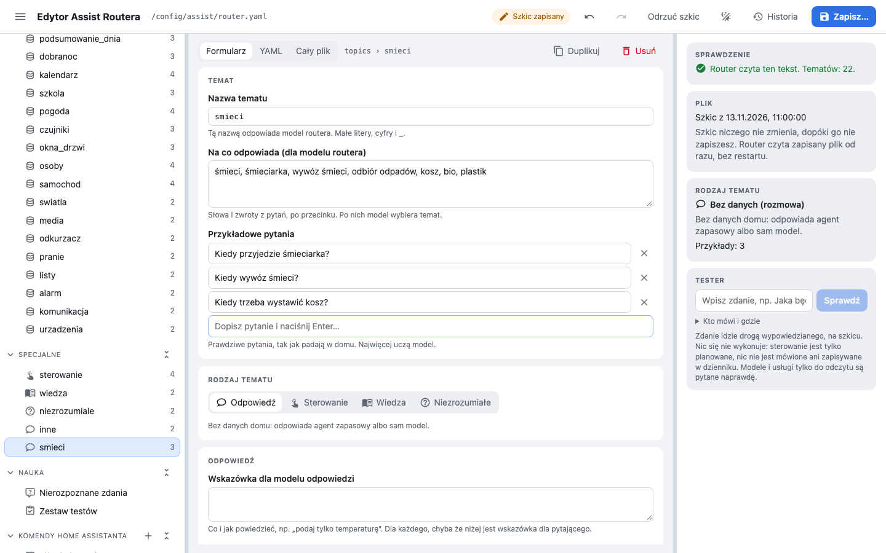
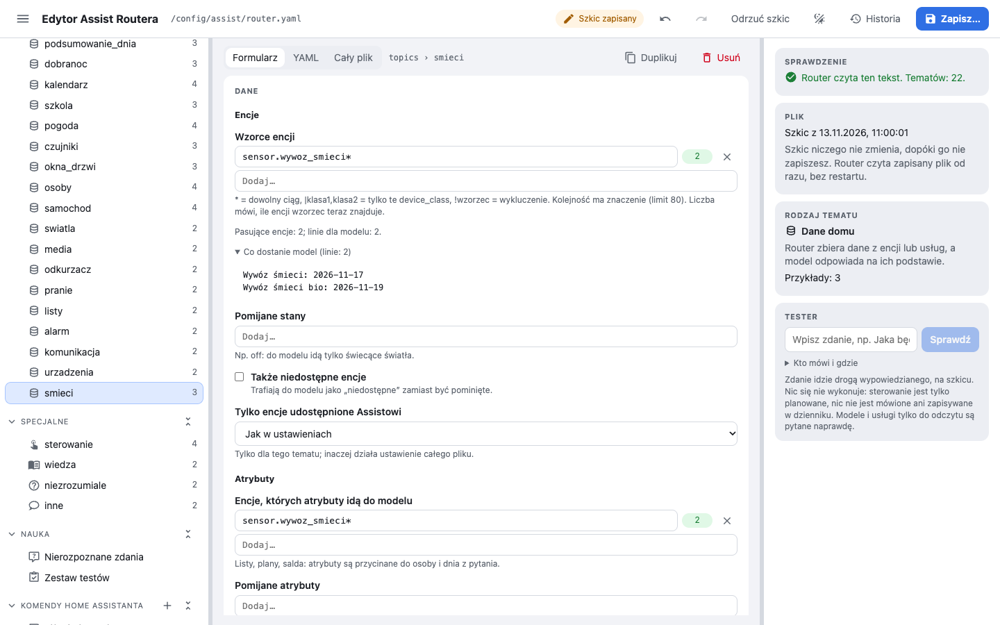
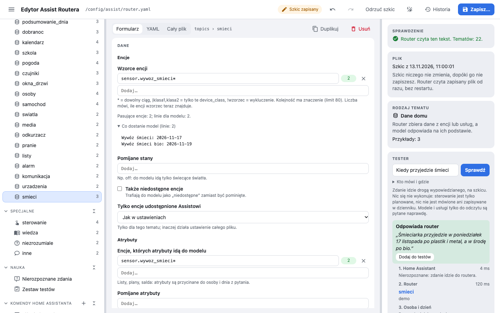
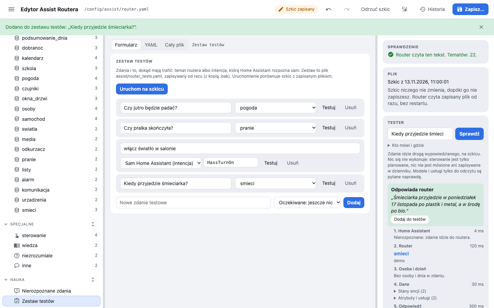
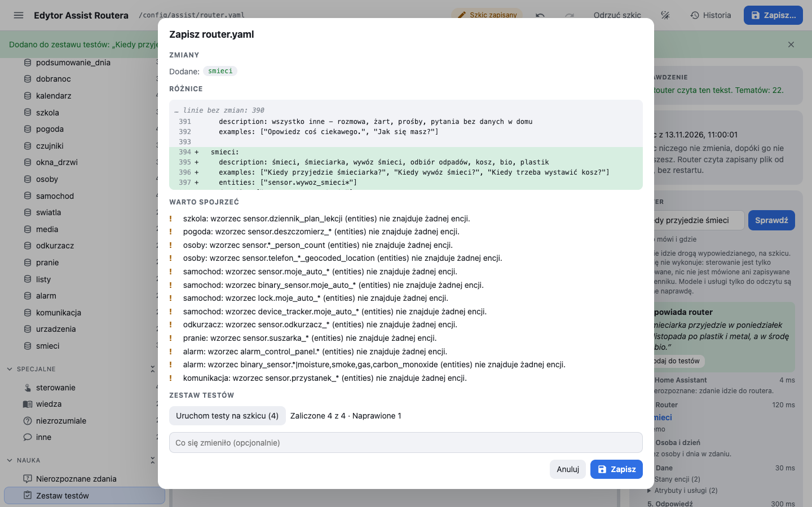
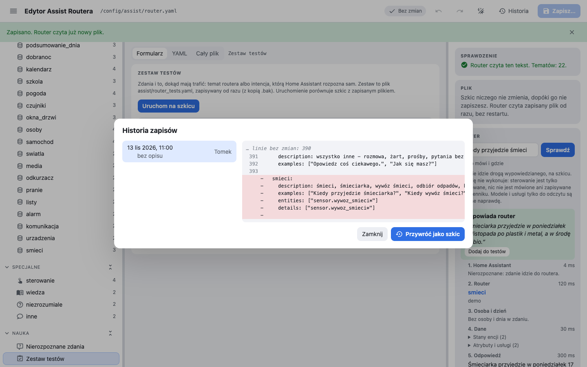
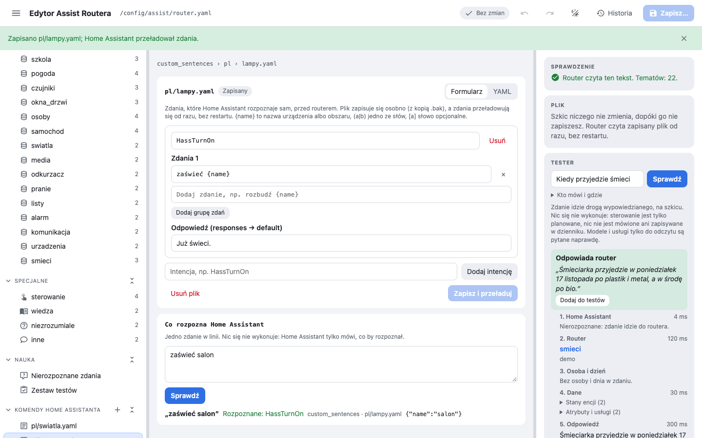

Edytor Assist Routera krok po kroku
Jak zbudować nową funkcję asystenta bez pisania YAML: od zdania, którego asystent nie zrozumiał, przez nowy temat z danymi, test i zapis, do komendy Home Assistant. Nazwy przycisków i pól są takie jak w edytorze, a zrzuty pochodzą z wersji demonstracyjnej ze zmyślonym domem.
← Dokumentacja Assist Routera · Polski · English · GitHub
1. Zanim zaczniesz
Edytor to panel w Home Assistant, w którym budujesz to, co umie asystent: tematy pytań z danymi domu i
komendy, które Home Assistant rozpoznaje sam. Nie musisz pisać YAML: każdy element ma formularz, a plik
router.yaml zmienia się dopiero po zapisie.
- Gdzie: pasek boczny → Edytor Assist Routera. Panel widzą tylko administratorzy. Gdy jest ukryty
(opcja Pokazuj edytor w pasku bocznym w Ustawienia → Urządzenia i usługi → Assist Router → Konfiguruj),
otworzysz go pod adresem
/assist-router-editor. - Bez Home Assistant:
make uiw repozytorium otwiera edytor na przykładowym pliku ze zmyślonym domem. Nic się wtedy nie zapisuje. Z tej wersji pochodzą wszystkie zrzuty poniżej. - Szkic: każda zmiana trafia do szkicu zapisanego w Home Assistant. Szkic niczego nie zmienia i czeka, także po zamknięciu strony. Cofanie: Ctrl+Z, ponawianie: Ctrl+Shift+Z, zapis: Ctrl+S.
Przykład, który przechodzi przez cały przewodnik: domownicy pytają „Kiedy przyjedzie śmieciarka?”, a
asystent tego nie rozumie. W kilku krokach powstaje temat smieci, który odpowiada z czujnika wywozu
śmieci, i komenda „zaświeć {name}” dla Home Assistant.
2. Ekran edytora
Ekran ma trzy kolumny. Ich szerokość zmienisz, przeciągając granicę; dwuklik przywraca pierwotną.


podsumowanie_dnia otwarty w formularzu.- Lewa kolumna, drzewo pliku:
- Dom: domownicy, Osoby, Rodzina, Persony, muzyka, ogłoszenia, potwierdzanie i Ustawienia (wyszarzone części plik jeszcze nie ma, możesz je wypełnić);
- Tematy pytań z przyciskiem + oraz Specjalne (sterowanie, wiedza, niezrozumiałe, inne);
- Nauka: Nierozpoznane zdania i Zestaw testów;
- Komendy Home Assistanta: pliki
custom_sentences, z przyciskiem +.
- Środek: zakładki Formularz, YAML (tylko ten element, z komentarzami) i Cały plik; po prawej Duplikuj i Usuń.
- Prawa kolumna: Sprawdzenie (czy router przeczyta tekst i ile ma tematów), Plik (stan szkicu), Rodzaj tematu i Tester.
- Górny pasek: stan (Bez zmian albo Szkic zapisany), cofnij i ponów, Odrzuć szkic, jasny lub ciemny wygląd, Historia i Zapisz….
3. Skąd wziąć pomysł: nierozpoznane zdania
Najlepsze nowe funkcje to te, o które domownicy już pytali. Kliknij Nauka → Nierozpoznane zdania.


- Sprawdź na szkicu pokazuje, dokąd każde zdanie trafiłoby teraz.
- Przy każdym zdaniu: Jako przykład do… (dopisuje je do istniejącego tematu), Nowy temat, Testuj (wstawia je do testera), Do testów i Ukryj. Ukrycie działa tylko w edytorze: dziennik zostaje bez zmian.
W przykładzie zdanie „Kiedy przyjedzie śmieciarka?” trafiło do tematu „niezrozumiałe”. Kliknij przy nim Nowy temat.
4. Nowy temat
Nowy temat zakłada temat z tym zdaniem jako opisem i pierwszym przykładem i od razu otwiera jego formularz. Pusty temat dodaje też + przy Tematy pytań.
- Nazwa tematu: krótki klucz z małych liter, cyfr i
_, np.smieci. Tą nazwą odpowiada model routera. Zmiana nazwy zmienia klucz w pliku. - Na co odpowiada (dla modelu routera): słowa i zwroty z pytań po przecinku, np. „śmieci, śmieciarka, wywóz śmieci, odbiór odpadów, kosz, bio, plastik”. Po nich model wybiera temat, więc wpisz różne sposoby mówienia o tym samym.
- Przykładowe pytania: wpisz pytanie w Dopisz pytanie i naciśnij Enter… i naciśnij Enter. Dodaj kilka prawdziwych pytań, tak jak padają w domu: najwięcej uczą model.


Rodzaj tematu ustawiasz przyciskami Odpowiedź, Sterowanie, Wiedza i Niezrozumiałe. Pytanie o dane domu to Odpowiedź. Prawa kolumna pokazuje, jak router widzi temat: po dodaniu danych zmieni się na Dane domu.
Niżej, w części Odpowiedź, są Wskazówka dla modelu odpowiedzi (np. „podaj dzień tygodnia i rodzaj śmieci”), Wskazówki zależne od pytającego (0) (liczba mówi, ile ich jest), Najdłuższa odpowiedź (tokeny) i O pytającym.
5. Dane tematu
Temat odpowiada z danych, które mu wskażesz. Przewiń do części Dane.
- Encje → Wzorce encji: wpisz wzorzec w polu Dodaj… i naciśnij Enter, np.
sensor.wywoz_smieci*. Gwiazdka to dowolny ciąg. Zielona liczba obok mówi, ile encji wzorzec znajduje teraz; zero jest oznaczone na pomarańczowo. - Pod wzorcami: Pasujące encje: 2; linie dla modelu: 2. Rozwiń Co dostanie model (linie: 2), żeby zobaczyć dokładnie te linie, które pójdą do modelu.
- Atrybuty → Encje, których atrybuty idą do modelu: wzorce encji (nie nazwy atrybutów), których
atrybuty mają trafić do modelu, np. ten sam
sensor.wywoz_smieci*, żeby model znał rodzaj śmieci. - Usługi → Dodaj usługę: dane z usługi, która je zwraca, np.
calendar.get_events. Usługi nie są wywoływane podczas pisania; robi to dopiero Pobierz dane teraz, i tylko usługi, które wyłącznie zwracają dane.


Liczba 0 przy wzorcu to najczęstszy błąd: wzorzec nie pasuje do żadnej encji (literówka, inna domena) albo w polu Encje, których atrybuty idą do modelu wpisano nazwę atrybutu zamiast wzorca encji.
6. Tester
Tester puszcza zdanie drogą wypowiedzianego, na szkicu, czyli bez zapisu. Wpisz zdanie w prawej kolumnie (Tester) i kliknij Sprawdź.


smieci i odpowiedź modelu; niżej kolejne kroki drogi.- 1. Home Assistant: czy HA rozpoznaje zdanie sam. Rozpoznane kończy drogę.
- 2. Router: wybrany temat (kliknięcie otwiera go w formularzu), model i czas.
- 3. Osoba i dzień wyciągnięte ze zdania.
- 4. Dane: stany encji, atrybuty i usługi, które dostał model.
- 5. Odpowiedź modelu z czasem; Prompt da się rozwinąć.
Kto mówi i gdzie ustawia mówcę, personę, pokój i porównanie z zapisanym plikiem. Tester niczego nie robi w domu: sterowanie jest tylko planowane, nic nie jest mówione ani zapisywane w dzienniku. Naprawdę pytane są modele i usługi, które tylko zwracają dane.
Gdy router wybiera zły temat, popraw Na co odpowiada (dla modelu routera) albo dopisz przykład i sprawdź ponownie.
7. Zestaw testów
Działające zdanie warto zapamiętać, żeby kolejna zmiana go nie popsuła. W testerze kliknij Dodaj do testów.
Zestaw jest w Nauka → Zestaw testów (plik assist/router_tests.yaml, zapisywany od razu,
z kopią .bak).


- Uruchom na szkicu sprawdza każde zdanie na szkicu i na zapisanym pliku.
- Nowy test: Nowe zdanie testowe, cel z listy (temat albo Sam Home Assistant (intencja)) i Dodaj.
- Testuj wstawia zdanie do testera, Usuń usuwa test.
8. Zapis
Kliknij Zapisz… na górze. Okno Zapisz router.yaml pokazuje wszystko, zanim plik się zmieni:


- Zmiany: elementy dodane, usunięte i zmienione; Różnice: zmienione linie pliku.
- Warto spojrzeć: wzorce, które nic nie znajdują, usługi, które mogą coś zmienić albo których nie ma, tematy bez opisu lub przykładów. Ostrzeżenia nie blokują zapisu. W pliku przykładowym są ostrzeżenia dla encji, których zmyślony dom nie ma.
- Zestaw testów: Uruchom testy na szkicu (4) pokazuje, ile testów przeszło i ile zmiana naprawiła albo popsuła.
- Co się zmieniło (opcjonalnie): opis wersji do historii. Potem Zapisz.
Edytor nie zapisze tekstu, którego router nie przeczyta. Router czyta zapisany plik od razu, bez restartu, a
poprzedni zostaje jako router.yaml.bak.
9. Historia i cofanie
Historia na górze otwiera Historia zapisów: ostatnie 30 zapisów z datą, opisem i autorem. Wybrana wersja pokazuje różnice wobec obecnego pliku.


smieci (linie na czerwono).Przywróć jako szkic wczytuje tę wersję do szkicu; plik zmieni się dopiero po zapisie. Przed zapisem całe zmiany odrzuca Odrzuć szkic.
10. Komenda Home Assistant
Nie każde zdanie potrzebuje routera. Proste polecenia Home Assistant rozpozna sam, szybciej i bez modelu, jeśli
dodasz je do custom_sentences. Takie pliki są w grupie Komendy Home Assistanta.
- + przy Komendy Home Assistanta. Przeglądarka zapyta o nazwę pliku
(„Nazwa nowego pliku w custom_sentences (litery, cyfry, _ i -):”), np.
lampy.yaml. - Wpisz intencję w Intencja, np. HassTurnOn i kliknij Dodaj intencję. Wbudowane intencje Home
Assistant (np.
HassTurnOn,HassTurnOff) działają od razu. - W Zdania 1 wpisz zdanie w Dodaj zdanie, np. rozbudź {name} i naciśnij Enter, np.
zaświeć {name}.{name}to nazwa urządzenia albo obszaru,(a|b)jedno ze słów,[a]słowo opcjonalne. Dodaj grupę zdań zakłada kolejną grupę. - Odpowiedź (responses → default): co Home Assistant powie, np. „Już świeci.”. Puste = odpowiedź Home Assistanta.
- Zapisz i przeładuj: sprawdza każde zdanie tak jak Home Assistant, zapisuje plik z kopią
.baki przeładowuje zdania, więc komenda działa od razu, bez restartu. - Co rozpozna Home Assistant: wpisz zdanie, np. „zaświeć salon”, i kliknij Sprawdź. Nic się nie wykonuje: Home Assistant tylko mówi, co by rozpoznał.


pl/lampy.yaml zapisany i przeładowany; „zaświeć salon” → Rozpoznane: HassTurnOn z name = salon.Intencja, której Home Assistant nie umie wykonać (nie jest wbudowana ani nie ma intent_script),
jest oznaczona: zdanie zostanie rozpoznane, ale nic się nie stanie.
Plik komend zapisuje się osobno, nie razem ze szkicem router.yaml. Usuń plik odkłada go jako
.bak.
11. Gdy coś nie działa
| Co widzisz | Przyczyna | Co zrobić |
|---|---|---|
| Liczba 0 przy wzorcu encji | Wzorzec nie pasuje do żadnej encji. | Sprawdź identyfikator encji w Home Assistant; w Encje, których atrybuty idą do modelu wpisuje się wzorce encji, nie nazwy atrybutów. |
| Rodzaj tematu: Bez danych (rozmowa) | Temat nie ma żadnego źródła danych. | Dodaj Wzorce encji albo usługę w części Dane. |
| Tester wybiera inny temat | Opis albo przykłady są podobne do innego tematu. | Dopisz słowa do Na co odpowiada (dla modelu routera) i prawdziwe pytania do Przykładowe pytania. |
| Sprawdzenie: „Router nie przeczyta tego tekstu:” | Tekst w zakładce YAML nie jest poprawnym YAML. | Popraw linię z komunikatu albo cofnij zmianę (Ctrl+Z). |
| „W międzyczasie router.yaml zmienił się poza edytorem.” | Plik zmieniono w innym miejscu po rozpoczęciu szkicu. | Zapisz mimo to nadpisze tamte zmiany; okno zapisu pokaże różnice. |
| „Home Assistant nie ma obsługi intencji …” | Intencja nie jest wbudowana ani nie ma intent_script. |
Wybierz znaną intencję albo dodaj intent_script. |
| Nie widać panelu w pasku bocznym | Konto nie jest administratorem albo panel jest ukryty. | Otwórz /assist-router-editor albo włącz Pokazuj edytor w pasku bocznym. |
Opis wszystkich pól i opcji: rozdział 5 dokumentacji.